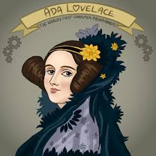

Hi! I'm Ada, Countess of Lovelace and am an English mathematician and writer,
chiefly known for my work on Charles Babbage's proposed mechanical
general-purpose computer, the Analytical Engine.
I am one of the first to recognize that machines have applications
beyond pure calculation, and to have published the first algorithm intended to
be carried out by such a machine.

This is Ada Loveless as a drawing
The world's first computer program for computing Bernoulli numbers
I helped Charles Babbage on topics ranging from math to computation that helped the development of the Analytical Engine.